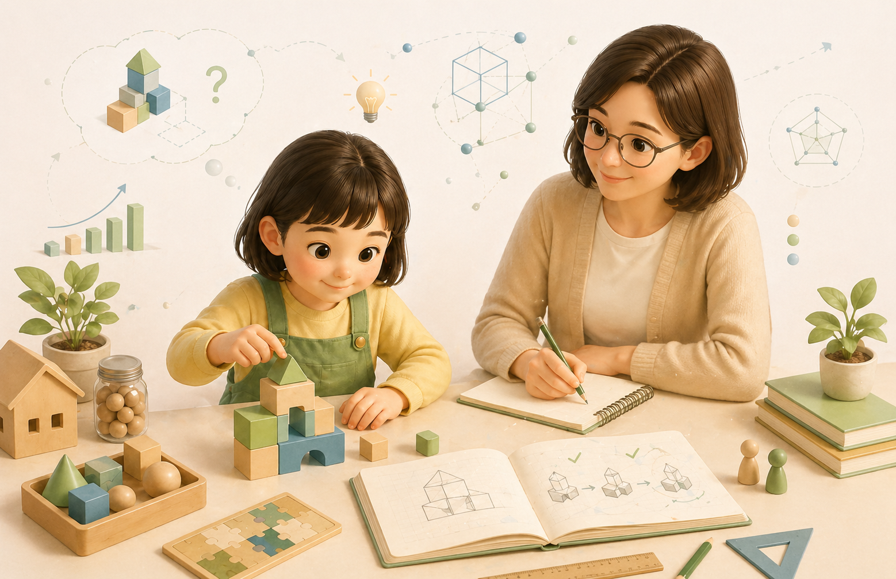
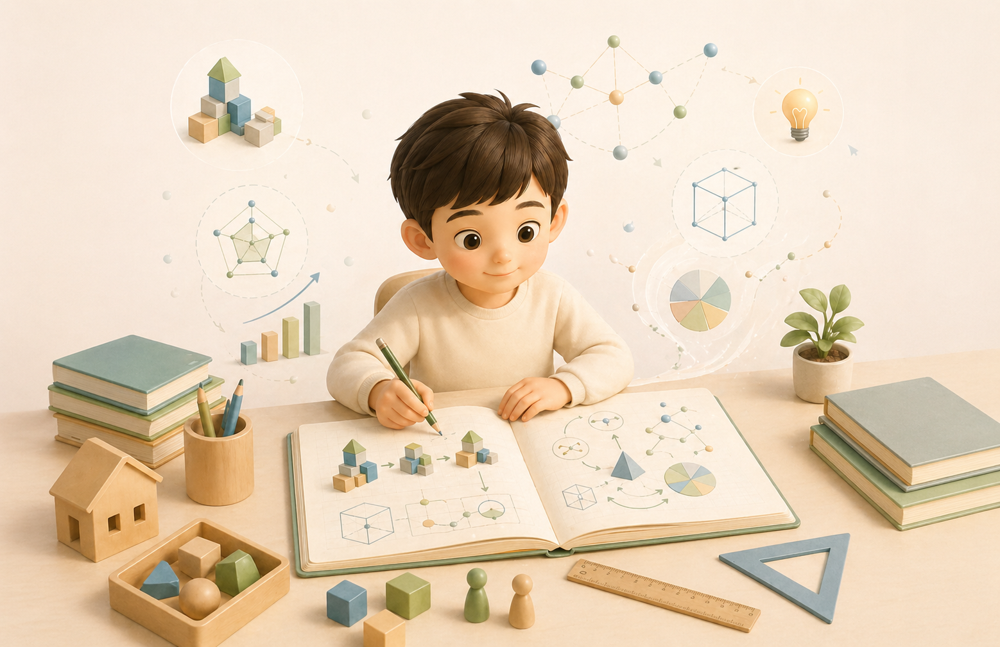

정답보다 먼저, 아이의 내면을 봅니다.
모두가 같은 100점을 향해 달릴 때, 매쓰두잉은 먼저 아이가 세상을 바라보는 방식과 사고의 흐름을 관찰합니다. 수학교육의 본질은 문제를 맞히는 기술이 아니라 합리적으로 생각하는 힘을 기르는 일이라고 믿기 때문입니다.
MATH DOING
매쓰두잉은 그 결을 따라 잠재력을 실력으로 꽃피웁니다.
모두가 같은 100점을 향해 달릴 때, 매쓰두잉은 먼저 아이가 세상을 바라보는 방식과 사고의 흐름을 관찰합니다. 수학교육의 본질은 문제를 맞히는 기술이 아니라 합리적으로 생각하는 힘을 기르는 일이라고 믿기 때문입니다.
아이마다 사고의 특색은 다릅니다. 매쓰두잉은 일방적인 설명 대신, 학생이 가진 사고의 잠재력을 스스로 발견하고 실제 능력으로 발달시킬 수 있도록 정교하게 설계된 교육 환경을 제공합니다.
수학을 공부하는 것은 곧 합리적으로 생각하는 법을 배우는 일입니다. 매쓰두잉 센터에서 아이들은 발달 단계에 맞는 탐구를 통해 수학적 즐거움을 경험하며 단단한 사고의 근육을 키워갑니다.
3-6학년 1, 2학기 전 과정을 담은 수학문제 해결을 위한 완벽한 전략서
매쓰두잉은 아이가 가진 고유한 사고의 결을 존중합니다. 그래서 수업은 누군가의 속도를 따라가는 구조가 아니라, 각자의 발달 단계에서 가장 의미 있는 질문을 만나도록 설계됩니다.
우리의 목표는 단기 점수 향상이 아니라, 아이가 스스로 생각하고 문제를 해결하는 실제적 능력을 갖추는 것입니다. 그 힘이 결국 학습 전체를 지탱하는 가장 단단한 기초가 됩니다.
Math Doing근접발달영역을 바탕으로 현재 수준과 잠재 수준 사이를 진단하고, 다음 단계로 스스로 넘어갈 수 있는 맞춤형 비계를 제공합니다.
현실의 문제를 수학적으로 조직화하는 수학화 과정을 직접 경험하며, 구체에서 추상으로 나아가는 발생적 학습을 만듭니다.

교사가 답을 주기보다 학생이 가설을 세우고 검증하도록 설계해, 학습의 주도권과 자기주도적 문제 해결 능력을 키웁니다.

문제해결 전략과 알파·베타 공책을 통해 사고 과정을 기록하고 분석하며, 메타인지를 강화해 실제 능력으로 연결합니다.
매쓰두잉 교육 시스템
4대 교육 이론 기반 사고력 메커니즘
Vygotsky's ZPD
현 수준과 잠재 수준 사이를 정확히 진단해, 아이에게 가장 적절한 다음 단계를 설계합니다.
Scaffolding
적절한 힌트와 학습 양식에 맞는 교재를 제공해 스스로 성취감을 경험하도록 돕습니다.
Mathematization
완성된 공식을 외우는 대신 현실의 문제를 수학적으로 조직하는 과정을 직접 경험합니다.
Horizontal to Vertical
구체적인 경험에서 추상 개념으로 나아가는 수평적·수직적 성장을 발생적으로 이끕니다.
Brousseau's TDS
교사가 답을 설명하는 대신 학생이 교재와 상호작용하며 가설을 세우고 검증하는 상황을 제공합니다.
Transfer of Responsibility
학습의 주도권을 학생에게 돌려주어 자기주도적 문제 해결 능력을 실제 습관으로 만듭니다.
Problem Solving
전략을 내면화하도록 도우며, 문제를 해결하는 과정 자체를 학습의 중심에 둡니다.
Alpha-Beta Note
사고 과정을 기록하고 분석하는 특화 노트로 메타인지를 강화해, 어떤 난관도 스스로 돌파할 수 있는 능력을 완성합니다.
균형 있는 성장
네 가지 이론은 분절된 기술이 아니라 연결된 체계로 작동하며, 학생의 사고 능력을 균형 있게 발달시킵니다.
사고의 잠재력을 실력으로 연결하는 매쓰두잉의 약속
아이의 강점, 학습 태도, 다음 단계까지 명확하게 전달합니다. 매쓰두잉은 아이의 성장을 수업 안에서만 끝내지 않고, 가정과 연결된 언어로 설명합니다.
전문적인 연구 기반 수업이 학부모에게는 분명한 안심이 됩니다.
아이가 어디에서 막히고 무엇을 이해했는지 구체적으로 설명받을 수 있어 가정에서도 훨씬 안정적으로 도와줄 수 있습니다.
답을 알려주는 수업이 아니라 아이가 생각을 만들어가는 과정이 보여서, 공부의 밀도가 다르다는 느낌을 받게 됩니다.
사고 과정을 기록하고 설명하는 습관이 생기면서, 한 문제를 넘어 스스로 돌파하는 힘이 자라고 있다는 점이 가장 인상적입니다.
아이의 사고 특성을 함께 읽고, 가장 적합한 출발점을 제안합니다.